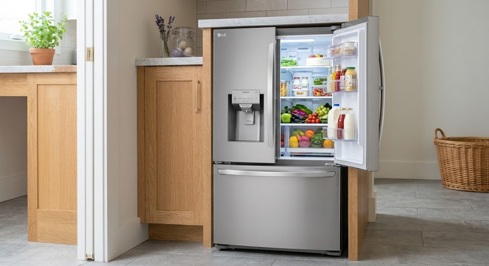
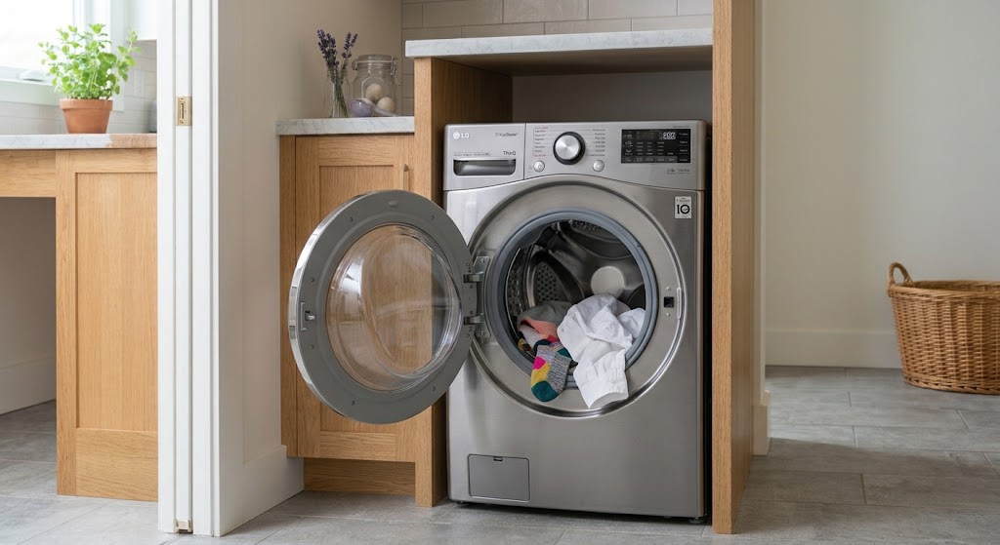
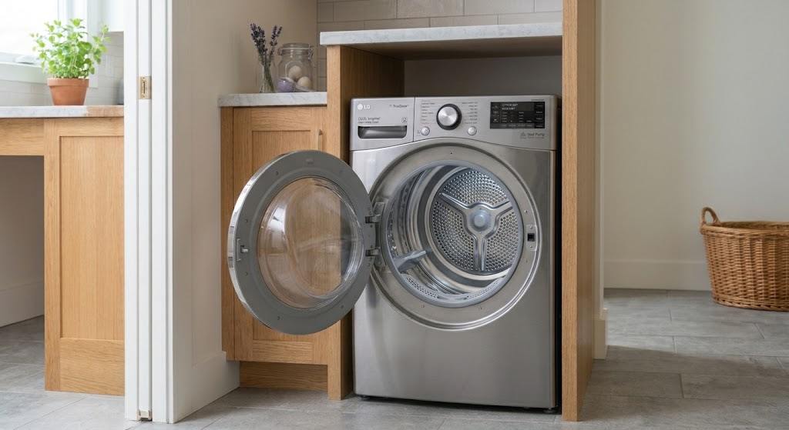
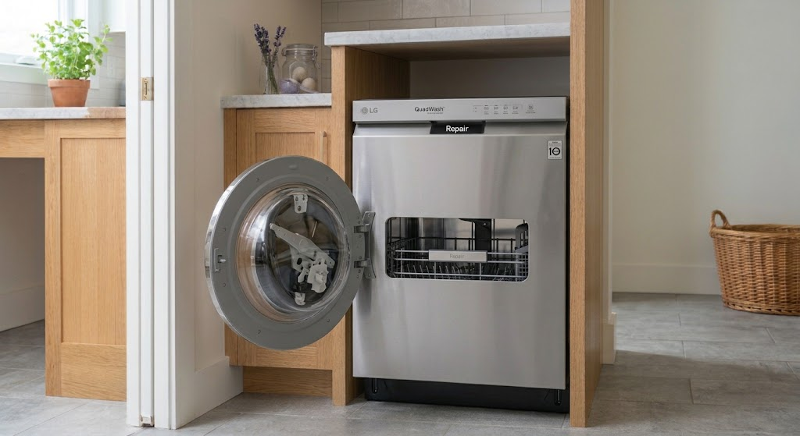

Fast On-Site LG Appliance Repairs in Gauteng
Certified technician dispatch for LG Inverter Linear fridges, Direct Drive washing machines, dual inverter dryers, and QuadWash dishwashers. We stock 100% factory-original LG OEM replacement parts across Sandton, Randburg, Midrand, and Rosebank.
Genuine LG Factory Parts
100% OEM Replacement Components
- 6-Month Written Warranty on Parts & Labor
- On-Site Direct Drive Motor & Hall Sensor Testing
- Stocked Linear Compressors, Pumps & PCB Boards
- Out-of-Warranty LG Unit Specialist Support
Expert On-Site Servicing for LG Direct Drive & Inverter Linear Systems
LG household appliances lead the market in direct-drive motor performance and linear cooling technology—from Direct Drive drum motors and Inverter Linear compressors to InstaView door panels and QuadWash steam systems. Diagnosing these units requires specialized electronic testing tools and factory components.
Eazy Appliance Repairs provides immediate, mobile technician dispatch across Sandton, Randburg, Midrand, Rosebank, and wider Gauteng. We stock 100% factory-original (OEM) LG replacement parts and back every repair with our signature 6-Month Guarantee on Parts & Labor.
Quick LG Assessor
Select your LG unit type for immediate diagnostic details
Full inventory of genuine LG Inverter Linear compressors, main PCB boards, defrost sensors, and door-in-door seal assemblies carried directly in our Gauteng mobile vans.
Book Fix For This UnitSpecialized On-Site LG Repairs Across Gauteng
We deliver factory-spec diagnostics and genuine replacement parts for all LG home appliance lines across Sandton, Randburg, Midrand, and Rosebank.

Inverter Linear & InstaViewLG Refrigerator & Freezer Repairs
Complete repair services for LG InstaView, Door-in-Door, Side-by-Side, and French Door refrigerators. We specialize in Inverter Linear compressors and electronic temperature sensor arrays.
Not Cooling (Er FF): Caused by a failed freezer fan motor, defrost heater circuit, or main PCB board fault. Resolved on-site in 45–60 mins.
Clicking Noise: Indicates a struggling Inverter Linear compressor start relay or overload switch. Instant relay replacement restores cooling.
Ice Maker Error (Er IF): Ice fan motor obstruction or water line valve failure. Fixed with original LG replacement modules.
LG Washing Machine Repairs
On-site technical support for LG Inverter Direct Drive, TurboWash, front-loader, and top-loader washers. We resolve drum rotation errors, motor sensor faults, and drainage failures.
Motor Error (LE): Indicates a failed Direct Drive Hall sensor or worn motor harness. Swapped quickly with genuine LG Hall sensors.
Drain Error (OE): Caused by a blocked drain hose filter or defective drain pump motor. Replaced on-site using OEM parts.
Unbalanced (UE): Out-of-level tub positioning or worn shock absorbers. Balanced and calibrated on-site.

Direct Drive & TurboWash
Dual Inverter Heat PumpLG Tumble Dryer Repairs
Fast maintenance for LG Dual Inverter heat pump, condenser, and sensor dry dryers. We fix heating trips, drum belt snaps, and moisture sensor errors across Gauteng.
Not Heating: Tripped thermal fuse or failed heating element assembly. Restored on-site using original LG thermal switches.
Drum Not Turning: Snapped drive belt, failed idler pulley wheel, or motor capacitor failure. Repaired within an hour.
Filter Error (d80/d90): Indicates 80%-90% exhaust duct blockage. Thorough airflow cleaning and sensor reset performed.
LG Dishwasher Repairs
Certified servicing for LG QuadWash and TrueSteam freestanding and integrated dishwashers. We resolve water leak errors, spray arm failures, and drain pump blockages.
Leak Error (AE/E1): Base pan float switch activated due to a tub seal or inlet hose leak. Repaired with OEM gasket replacements.
Not Washing Properly: Blocked QuadWash spray nozzle or failing circulation motor impeller. Fixed on-site.
Heater Fault (tE): Defective thermistor temperature sensor or heating element. Replaced with original LG components.

QuadWash & TrueSteamAdvanced Direct Drive & Inverter Diagnostics On-Site
LG’s direct-drive motor arrays and linear compressors require specialized digital testing equipment. Our technicians carry diagnostic tools to test and calibrate LG microprocessors right at your home.
Genuine LG Factory OEM Spares
Certified factory components engineered for longevity
-
Backed by 6-Month Written Warranty Complete protection covering both fitted original parts and technical labor.
-
Direct Drive Hall Sensor Calibration Precise pulse signal alignment for smooth drum rotation and whisper-quiet operation.
-
Inverter Linear Compressor Protection Maintains factory pressure tolerances and energy ratings to protect system lifespan.
The Risk of Generic Knockoffs
Why imitation spare parts lead to fast breakdowns
-
Frequent Sensor Misreads Uncertified motor sensors cause false LE error codes and drum rotation stalls.
-
Main PCB Board Short Circuits Mismatched electrical resistance can damage expensive electronic control boards.
-
Unstable Power Surge Resistance Imitation relays lack voltage regulation needed during South African grid load shedding.
LG Appliance Error Code Diagnostic Guide
Is your LG appliance displaying a fault code on its digital panel? Use our instant lookup tool to identify the cause and recommended technician fix.
| Appliance | Error Code | Diagnosed Issue | Recommended Technician Fix | Action |
|---|---|---|---|---|
| Washer | OE |
Drainage Failure (Water Not Emptying) | Inspect drain filter trap, test drain hose for blockage, replace failed drain pump. | Book Fix |
| Washer | LE |
Motor Locked / Hall Sensor Error | Test Direct Drive motor assembly, replace burned hall sensor or wiring harness. | Book Fix |
| Washer | UE |
Unbalanced Load Error | Rebalance laundry load, level unit feet, test drum suspension dampers. | Book Fix |
| Washer | dE / dE1 |
Door Lock Switch Malfunction | Inspect door latch alignment, replace faulty electronic door interlock switch. | Book Fix |
| Fridge | Er FF |
Freezer Fan Motor Fault | Check evaporator coil icing, clear fan blade obstruction, replace fan motor. | Book Fix |
| Fridge | Er IF |
Ice Maker Fan Error | Inspect ice room fan ducting, test motor resistance, replace ice blower unit. | Book Fix |
| Fridge | Er dH |
Defrost Heater / Thermistor Circuit | Test defrost heater continuity, replace open thermal fuse or defrost thermistor. | Book Fix |
| Dryer | tE1 / tE2 |
Thermistor Sensor Failure | Test temperature thermistor resistance, replace faulty heat sensor unit. | Book Fix |
| Dryer | d80 / d90 |
Exhaust Duct Blockage (80%-90%) | Clean internal lint trap housing and clear wall vent ducting of restriction. | Book Fix |
| Dishwasher | AE / E1 |
Water Leakage Float Sensor Triggered | Inspect base tray water level, locate tub or sump hose leak, replace damaged gasket. | Book Fix |
Same-Day LG Repair Mobile Vans Across Gauteng
Our mobile units travel daily through Sandton, Randburg, Midrand, Rosebank, and surrounding areas fully stocked with original LG Direct Drive and Inverter Linear spare parts.
LG Primary Mobile Hubs
Technicians on standby in your area for fast on-site dispatch:
Check LG Van Status
Select your area and appliance type for immediate dispatch status
Need Urgent LG Appliance Repair in Gauteng?
Connect directly with our LG technical desk or request a priority callback. Our mobile vans operate daily across Sandton, Randburg, Midrand, and Rosebank stocked with genuine Direct Drive motor sensors, Inverter Linear components, and QuadWash spare parts.
- 6-Month Written Warranty on Parts & Labor
- 100% Factory OEM LG Replacement Parts
- Upfront Fixed Quotations — No Surprise Fees
Request an LG Repair Callback
Submit your details for a priority technician callback within 15 minutes.
Frequently Asked LG Repair Questions
Everything you need to know about our specialized LG support, genuine spare parts sourcing, and on-site servicing across Sandton, Randburg, Midrand, Rosebank, and wider Gauteng.
Yes. We exclusively fit 100% factory-original (OEM) LG replacement parts sourced from authorized brand distributors. From Direct Drive Hall sensors and Inverter Linear compressors to QuadWash pump assemblies, we never fit generic knockoffs.
Absolulely. Our mobile units carry specialized computer diagnostic gear to analyze and reset digital error codes (such as OE, LE, UE, Er FF, or AE) and calibrate microprocessors directly at your location.
Yes. We specialize in out-of-warranty and post-warranty LG repairs. Every completed repair comes with our own written 6-Month Warranty covering both installed replacement parts and technician labor.
Our mobile service vans operate daily across major Gauteng hubs, enabling same-day emergency technician dispatch with typical arrival times of under 60 minutes depending on your suburb.
Yes. Our technician conducts a physical inspection on-site and provides a fixed, itemized written quotation before performing any repair work. There are no surprise costs or hidden fees.